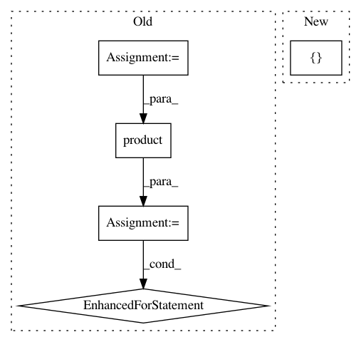

7d071a98a7e65dee12e5567cb410c5061c9ddb84,test/webdnn_test/graph_test/operators_test/deconvolution2d_test.py,,main,#Any#Any#Any#Any#Any#Any#Any#Any#Any#,9
Before Change
def main(k, s, p, n, h1, w1, c1, c2, expected_shape_dict: AxisKeyDict[int]):
orders = [OrderNHWC, OrderHWNC, OrderHWCN, OrderNCHW, OrderCNHW, OrderCHWN]
for order_x, order_w in itertools.product(orders, orders):
op = Deconvolution2D(None, ksize=k, stride=s, padding=p)
x = Variable((n, h1, w1, c1), OrderNHWC)
x.change_order(order_x)
w = Variable((c1, op.ksize[0], op.ksize[1], c2), OrderCHWN)
w.change_order(order_w)
y, = op(x, w)
for axis in y.order.axes:
assert y.shape_dict[axis] == expected_shape_dict[axis]
def test_normal():
main(3, 1, 1, 2, 3, 4, 6, 5, AxisKeyDict([Axis.N, Axis.H, Axis.W, Axis.C], [2, 3, 4, 5]))
After Change
def main(k, s, p, n, h1, w1, c1, c2, expected_shape_dict: AxisKeyDict[int]):
op = Deconvolution2D(None, ksize=k, stride=s, padding=p)
x = Variable((n, h1, w1, c1), Order([Axis.N, Axis.H, Axis.W, Axis.C]))
w = Variable((c1, op.ksize[0], op.ksize[1], c2), Order([Axis.C, Axis.KH, Axis.KW, Axis.N]))
y, = op(x, w)
In pattern: SUPERPATTERN
Frequency: 3
Non-data size: 5
Instances
Project Name: mil-tokyo/webdnn
Commit Name: 7d071a98a7e65dee12e5567cb410c5061c9ddb84
Time: 2017-11-24
Author: y.kikura@gmail.com
File Name: test/webdnn_test/graph_test/operators_test/deconvolution2d_test.py
Class Name:
Method Name: main
Project Name: mil-tokyo/webdnn
Commit Name: 7d071a98a7e65dee12e5567cb410c5061c9ddb84
Time: 2017-11-24
Author: y.kikura@gmail.com
File Name: test/webdnn_test/graph_test/operators_test/convolution2d_test.py
Class Name:
Method Name: main
Project Name: pgmpy/pgmpy
Commit Name: fa6a87eaf692f72ecd12aa24eff8071062c88516
Time: 2015-06-14
Author: pratyaksh@me.com
File Name: pgmpy/inference/Sampling.py
Class Name: BayesianModelSampling
Method Name: forward_sample